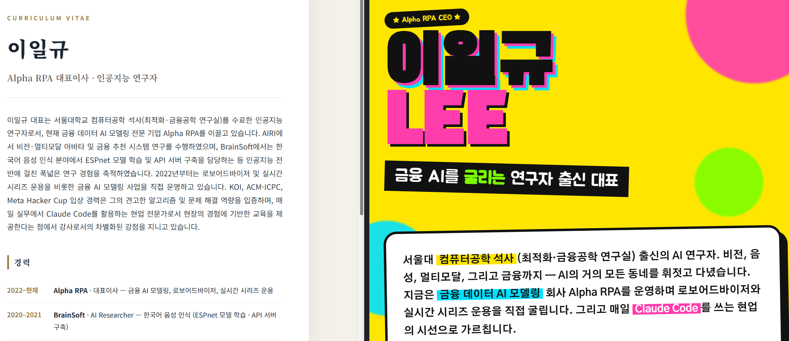

TIER 1 · 첫 결과물
나를 소개하는 웹페이지를 만든다
📁
이번 단계 폴더 →
실습자료/01-자기소개/
대화만으로 나를 인터뷰하게 하고, 그 내용을 브라우저로 바로 열리는 한 페이지로 완성합니다. 오늘의 첫 손에 잡히는 결과물.
5질문 인터뷰
1HTML 페이지
∞디자인 변형
GOAL · 결과물
대화 → 브라우저로 열리는 페이지
어떻게 진행되나
- Cowork이 나에게 질문을 합니다.
- 답을 모아 소개 글을 씁니다.
- 그 글로 웹페이지를 만듭니다.
- 마음에 들 때까지 고쳐 갑니다.

보조 재료
이 폴더의 이력메모.txt를 보조 재료로 줘도 됩니다. 비어 있어도 OK — Cowork이 알아서 인터뷰합니다.
STEP 1 · 인터뷰
나를 인터뷰하게 한다
① 빠른 인터뷰 — 5개 질문
나를 인터뷰해서 어떤 사람인지 소개하는 글을 만들어 줘. 질문은 한 번에 하나씩, 5개만. 다 듣고 정중한 한 문단으로 정리해 줘.
② 깊은 인터뷰 — 10개 질문
나를 더 깊게 인터뷰해 줘. 질문은 한 번에 하나씩, 10개. 배경 · 경력 · 강점 · 관심사 · 앞으로의 계획을 골고루. 끝나면 짧은 한 문단 + 핵심 키워드 5개로 정리.
STEP 2 · 톤 바꾸기
같은 내용을 — 다른 분위기로
더 간결하게
방금 글을 절반 길이로 더 간결하게 다듬어 줘.
격식 있게
같은 내용을 더 격식 있고 공식적인 말투로 바꿔 줘.
따뜻하게
이번엔 더 친근하고 따뜻한 말투로 바꿔 줘.
STEP 3 · 웹페이지로
글을 — 웹페이지로 바꾼다
① 깔끔 모던
지금까지 인터뷰한 내용으로(인터뷰를 건너뛰었다면 01-자기소개/이력메모.txt를 읽고) 한 페이지짜리 자기소개 웹페이지를 만들어 줘. 브라우저로 바로 열 수 있게 — 01-자기소개 폴더에 "자기소개.html"로 저장. 디자인은 깔끔하고 모던하게, 흰 배경에 한 가지 강조색.
② 개성 있게
같은 내용으로 한 번 더 만들되, 이번엔 분위기를 다르게. 대담한 색과 큰 글씨, 살짝 엉뚱한 레이아웃으로. 01-자기소개 폴더에 "자기소개-개성.html"로 저장.
파일명 자기소개.html은 그대로 두세요 — 다음 단계(T2)가 이 이름으로 읽어 갑니다.
STEP 4 · 확인
만든 페이지를 — 바로 확인
③ 브라우저로 열기
방금 만든 페이지를 브라우저로 열어서 보여 줘. 파일이 어디에 저장됐는지도 알려 줘.
④ 한눈에 비교
두 자기소개 페이지를 나란히 비교할 수 있게, 한 화면에 같이 띄워서 보여 줘.
STEP 5 · 다듬기
조금씩 — 구체적으로 고친다
색·분위기
전체 색을 차분한 남색 계열로 바꾸고, 글씨를 조금 키워 줘.
섹션 추가
맨 아래에 연락처 섹션과 프로필 사진 자리를 추가해 줘.
CHALLENGE · 먼저 끝났다면
한 발 더 — 도전 과제
도전 과제
- ① 반응형 모바일 — 휴대폰에서도 잘 보이게. 작은 화면에서는 세로로 쌓이고, 글씨·여백도 자동 조정되게.
- ② 다크 모드 토글 — 우상단 버튼을 누르면 밝은/어두운 테마가 부드럽게 전환되게 (애니메이션 포함).
- ③ 타임라인 섹션 — 경력·관심사를 연도순 세로 타임라인으로. 각 항목에 짧은 설명·아이콘.
- ④ 실제 프로필 사진 — 본인 사진 한 장을
01-자기소개폴더에 넣어 두고 "이 사진을 둥근 액자 + 부드러운 그림자로 넣어 줘"라고. - ⑤ 인쇄 가능 명함 — 같은 내용을 명함 한 장 크기로도 (인쇄용 PDF로).
결과물이 만족스러우면 — 채팅 입력창에 /채점 이라고 글자 그대로 입력해 점수 받아보기. 다음 단계에서는 이 자기소개를 진짜 발표자료·보고서로 바꿉니다.